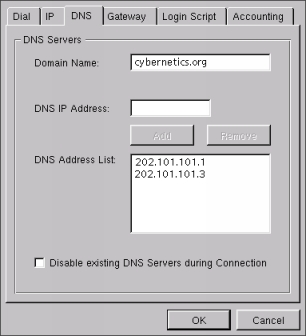
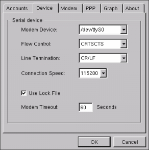

indoglobal.com
| Linux untuk Pemula :: Admin & Setting :: Koneksi Internet dengan Kppp |
|
Hosting by: indoglobal.com |
Bila cara koneksi menggunakan netcfg dirasakan merepotkan maka Anda dapat menggunakan program-program dial-up networking yang banyak ditawarkan di internet. Kppp adalah salah satu program dial-up networking yang begitu mirip dengan program dial-up milik Windows95. Bagi Anda yang pernah menggunakan Windows95 pasti tidak akan kesulitan menggunakannya. Kppp secara otomatis akan Anda peroleh bila Anda menginstalasi KDE dan paket kdenetwork.
Berikut ini adalah tampilan kppp yang siap digunakan untuk melakukan koneksi ke ISP:
Sebelum melakukan koneksi, pastikan terdapat file /etc/ppp/options dan pastikan pula file tersebut kosong. Kppp biasanya tidak akan bekerja bila file ini ada isinya.
Konfigurasi dapat dilakukan dengan menekan tombol Setup dan selanjutnya Anda bisa mengkonfigurasikan beberapa nomor telepon ISP beserta IP, DNS, Gateway masing-masing serta konfigurasi modem dan lain-lain. Kppp juga menyediakan Accounting untuk Anda yang ingin memantau atau mengotrol pemakain pulsa telepon. Berikut ini adalah contoh jendela-jendela untuk melakukan konfigurasi kppp:


| Linux untuk Pemula :: Admin & Setting :: Koneksi Internet dengan Kppp |
Komentari Halaman Ini (di Window Baru) |